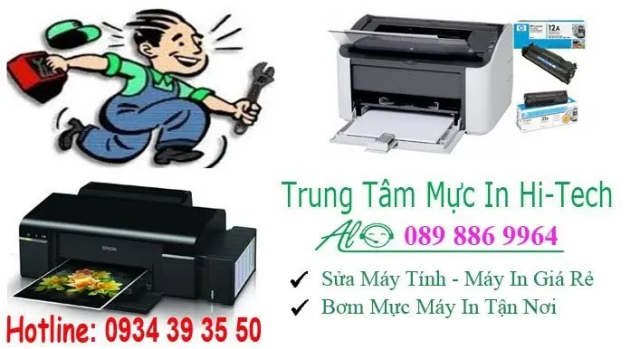
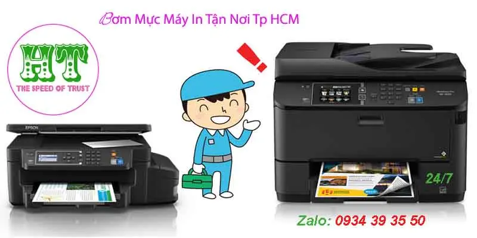

Nạp Mực Máy In Brother Tại Quận Bình Tân
Công Ty Bơm Mực Máy In Brother Tận Nơi Quận Bình Tân
Công ty mực in HiTech chuyên: bơm mực máy in brother các loại như : brother HL L2321D, brother : HL 2701, Brother .....
Ngoài dịch vụ bơm mực máy in brother. HiTech còn bơm mực máy in các loại như: Hp, Canon, Samsung, Lexmark, panasonic, Konica Minotal...
Dịch vụ bơm mực máy in brother tận nơi quận bình tân và các quận lân cận. Tới nhanh nhất chỉ 20'

Công Ty Bơm Mực Máy In Brother Uy Tín Quận Bình Tân
- Nạp mực máy in brother giá rẻ - Tiết kiệm chi phí doanh nghiệp
- Thay mực máy in brother tại nhàT nhanh nhất
- Dịch vụ nạp mực máy in quận bình tân - bảo hành chu đáo
- Hỗ trợ công nợ cuối tháng với công ty, doanh nghiệp
- Hỗ trợ tư vấn 24/7, Cài đặt driver miễn phí qua teamviewer, zalo ...
Với đội ngũ kỹ thuật viên đông đảo luôn túc trực tại quận bình tân và các quận lân cận. Kỹ thuật viên mực in có mặt nhanh nhất tại quận bình tân
Bảng Giá Bơm Mực Máy In Quận Bình Tân
Bơm mực máy in quận bình tân cam kết Uy Tín - Giá rẻ
Bơm mực máy in Brother giá rẻ
Máy in brother là loại máy sửa dụng tương đối nhiều tại tphcm. máy in brother với thiết kế đẹp mắt và tinh tế. hộm mực in dể nạp, Số lượng trang in lớn
Quý khách đang sử dụng máy in mới hay máy in cũ, máy nào trong quá trình sử dụng cũng sẽ có sự tiêu hao, hao mòn linh kiện trong máy, gây trục trặc, đặc biệt là mực máy in vì mực máy in là bộ phận thường xuyên hết mực hay hỏng hóc vì đây là bộ phận trong máy in hoạt động nhiều nhất và liên tục, bản in có nét đẹp hay không phụ thuộc rất nhiều vào hộp mực. Do đó khi đang sử dụng công việc bận rộn mà máy in hết mực làm gián đoạn quá trình sử dụng, giảm hiệu suất công việc của quý khách. Nắm bắt được nhu cầu của khách hàng, Chúng tôi Trung tâm máy văn phòng Hà Bắc đã trang bị cho mình rất nhiều kỹ thuật chuyên nghiệp, chuyên sâu và dày kinh nghiệm trong lĩnh vực sửa chữa máy văn phòng nói chung, nạp mực máy in brother nói riêng để đáp ứng tốt nhất nhu cầu cho quý khách hàng, để không làm công việc của quý khách bị gián đoạn. Các bạn hãy yên tâm máy in hỏng, máy in hết mực hãy để chúng tôi lo nhanh tay gọi cho chúng tôi ngay nhé.
- Công ty bơm mực máy in brother tại quận bình tân ?
Bạn cần một nhà cung cấp dịch vụ bơm mực in brother, máy in bị mờ, máy in không rõ chữ, máy in ra có vệt trắng giữa bản in, bạn đã lắc hộp mực mấy lần rồi, máy in có vệt đen dài dọc bản in ra, máy in báo lỗi đèn mực hình tam giác, máy in báo lỗi mực không in được, máy in báo toner emrty, máy in báo replace toner cartridge, máy in báo older toner cartride, máy in báo hết mực, máy in báo mực sắp hết... Còn chần chừ gì nữa hãy nhấc máy lên và gọi ngay cho chúng tôi, để nhận được dịch vụ thay mực máy in brother giá rẻ
Khi quý khách hàng có nhu cầu cần bơm mực máy in quận bình tân. Vui lòng liên hệ : 089 886 9964 Hoặc nhắn tin zalo : 0934393550

Xem Thêm: http://www.tinhocht.com/home/nap-muc-may-in-quan-binh-tan
Các loại máy in brother có thể nạp mực
nạp mực may in Brother DCP-L2500D, Brother DCP-L2520D, bơm mực máy in brother Brother DCP-L2520DW, Brother DCP-L2540DN, Brother DCP-L2540DW, Brother DCP-L2541DW, Brother DCP-L2560DW, Brother DCP-L5500D, Brother DCP-L5500DN, Brother DCP-L5502DN Brother DCP-L5600DN, Brother DCP-L5602DN, mucinhanoi365.com, Brother DCP-L5650DN, Brother DCP-L5652DN, Brother DCP-L6600DW, Brother DCP-L8400CDN, Brother DCP-L8450CDW, Brother DCP1000, Brother DCP110C, Brother DCP115C, Brother DCP117C ,Brother DCP1200, Brother DCP120C, Brother DCP130, Brother DCP135C, Brother DCP1400, Brother DCP145C, Brother DCP150C, Brother DCP1510, Brother DCP1511, Brother DCP1512, Brother DCP1518, Brother DCP153C, Brother DCP163C, Brother DCP165C, Brother DCP167C, Brother DCP185C, Brother DCP195C, Brother DCP310CN, Brother DCP315CN, Brother DCP330C, Brother DCP340CW, Brother DCP350C, Brother DCP353C, Brother DCP365CN, Brother DCP373CW, Brother DCP375CW, Brother DCP377CW ,Brother DCP383C, Brother DCP385C, Brother DCP387C, Brother DCP395CN ,Brother DCP4020C, Brother DCP540CN, Brother DCP560CN, Brother DCP585C ,Brother DCP6690CW, Brother DCP7010, Brother DCP7020, Brother DCP7025 ,Brother DCP7030, Brother DCP7032, Brother DCP7040, Brother DCP7045N ,Brother DCP7055, Brother DCP7057, Brother DCP7060D, Brother DCP7065DN ,Brother DCP7070DW, Brother DCP7080, Brother DCP7080D, Brother DCP7180N, Brother DCP7320, Brother DCP750CW, Brother DCP8020, Brother DCP8025D ,,Brother DCP8025DN, Brother DCP8040, Brother DCP8045D, Brother DCP8045DN, Brother DCP8060, Brother DCP8065DN, Brother DCP8070D, Brother DCP8080DN, Brother DCP8085DN, Brother DCP8110DN, Brother DCP8112DN Brother DCP8150DN, Brother DCP8152DN, Brother DCP8155DN Brother DCP8157DN, Brother DCP8250DN, Brother DCP9010CN, Brother DCP9020CDN, Brother DCP9020CDW, Brother DCP9040CN, Brother DCP9042CDN, Brother DCP9045CDN, Brother DCP9055CDN, Brother DCP9270CDN, mucinhanoi365.com, Brother DCPJ125, Brother DCPJ315W, Brother DCPJ515W, Brother
Brother MFC8881DN Brother MFC8890DW Brother MFC890 Brother MFC8910DW Brother MFC8912DW Brother MFC8950DW Brother MFC8950DWT Brother MFC8952DW Brother MFC9000 Brother MFC9010CN Brother MFC9020CN Brother MFC9040CN Brother MFC9050 Brother MFC9100C Brother MFC9120CN Brother MFC9125CN Brother MFC9130CW Brother MFC9140CDN, Brother MFC9160, Brother MFC9180 Brother MFC9200C, Brother MFC9320CW, Brother MFC9325CW, Brother MFC9330CDW ,Brother MFC9340CDW, Brother MFC9420CN ,Brother MFC9440CN Brother MFC9450CDN, Brother MFC9460CDN, Brother MFC9465CDN, mucinhanoi365.com, Brother MFC9500 Brother MFC9550, Brother MFC9560CDW ,Brother MFC9600 Brother MFC9660 Brother MFC9700, Brother MFC9750 ,Brother MFC9760 Brother MFC9800 Brother MFC9840CDW, Brother MFC9850, Brother MFC9860 Brother MFC9870 Brother MFC9880, Brother MFC990CW, Brother MFC9970CDW, Brother MFCJ220, Brother MFCJ265W Brother MFCJ270W ,Brother MFCJ280W ,Brother MFCJ410W, Brother MFCJ415W Brother MFCJ425W ,Brother MFCJ430W, Brother MFCJ435W, Brother MFCJ615W Brother MFCJ625DW, Brother MFCJ630W, Brother MFCJ6510DW ,Brother MFCJ6710DW ,Brother MFCJ6910DW, Brother MFCJ825DW, Brother MFCJ835DW
DCPJ525W, Brother DCPJ715W ,Brother DCPJ725DW, Brother DCPJ925DW ,Brother FAX1010 Brother FAX8650P Brother HL-L2380DW Brother HL1060 ,Brother HL1070 Brother HL1240 Brother HL1250, Brother HL1260 ,Brother HL1260e, Brother HL1270, Brother HL1660, Brother HL1660e, Brother HL2060 Brother HL2280DW ,Brother HL2400C, Brother MFC-L2680W ,Brother MFC-L2700D ,Brother MFC-L2700DN, Brother MFC-L2700DW ,Brother MFC-L2701D Brother MFC-L2701DW, Brother MFC-L2703DW ,Brother MFC-L2705DW Brother MFC-L2720DW Brother ,MFC-L2740DW Brother MFC-L5700DN Brother MFC-L5700DW Brother MFC-L5702DW, Brother MFC-L5750DW Brother MFC-L5755DW Brother MFC-L5800DW ,Brother MFC-L5802DW Brother MFC-L5850DW Brother MFC-L5900DW Brother MFC-L5902DW, Brother MFC-L6700DW Brother MFC-L6702DW Brother MFC-L6750DW, Brother MFC-L6800DW Brother MFC-L6900DW Brother MFC-L6902DW Brother MFC-L8600CDW Brother MFC-L8650CDW Brother MFC-L8850CDW Brother MFC-L9550CDW Brother MFC1770 ,Brother MFC1810 Brother MFC1811 Brother MFC1813, Brother MFC1815 ,Brother MFC1818, Brother MFC1870MC ,Brother MFC1970MC, Brother MFC210C, Brother MFC215C, Brother MFC230C ,Brother MFC235C, Brother MFC240C, Brother MFC250C, Brother MFC255CW, Brother MFC260C, Brother MFC265C ,Brother MFC290C, Brother MFC295CN ,Brother MFC297 ,Brother MFC3100 ,Brother MFC3200C ,Brother MFC3220C ,Brother MFC3240C, Brother MFC3340CN Brother MFC3420C, Brother MFC370MC, Brother MFC3820CN, Brother MFC3900ML Brother MFC390MC Brother MFC4000ML Brother MFC410CN Brother MFC420CN Brother MFC425CN Brother MFC4350 Brother MFC440CN Brother MFC4420C Brother MFC4450 Brother MFC4500ML Brother MFC4550 Brother MFC4550plus Brother MFC4650 Brother MFC465CN Brother MFC4820C Brother MFC490CW Brother MFC495CW Brother MFC5200C Brother MFC5440CN Brother MFC5460CN Brother MFC5490CN Brother MFC5500ML Brother MFC580 Brother MFC5840CN Brother MFC5860CN Brother MFC5890CN Brother MFC6000ML Brother MFC620CN Brother MFC640CW Brother MFC6490CW Brother MFC6550MC Brother MFC660CN Brother MFC6650MC Brother MFC665CW Brother MFC6800 Brother MFC680CN Brother MFC685CW Brother MFC6890CDW Brother MFC7000FC Brother MFC700C Pro Brother MFC7150C Brother MFC7160C Brother MFC7200FC Brother MFC7220 Brother MFC7225N Brother MFC730 Brother MFC7300C Brother MFC7320 Brother MFC7340 Brother MFC7345N Brother MFC7360 Brother MFC7362N Brother MFC7380 Brother MFC740 Brother MFC7400C Brother MFC7420 Brother MFC7440N Brother MFC7450 Brother MFC7460DN Brother MFC7470D Brother MFC7480D Brother MFC7550MC Brother MFC760 Brother MFC7650MC Brother MFC7750 Brother MFC7820N Brother MFC7840N Brother MFC7840W Brother MFC7860DN, mucinhanoi365.com, Brother MFC7860DW Brother MFC7880DN Brother MFC790CW Brother MFC795CW Brother MFC820CW Brother MFC8220 Brother MFC830 Brother MFC8300 Brother MFC8370DN Brother MFC8380DN Brother MFC840 Brother MFC8420 Brother MFC8440 Brother MFC845CW Brother MFC8460N Brother MFC8480DN Brother MFC8500 Brother MFC8510DN Brother MFC8512DN Brother MFC8515DN Brother MFC8520DN Brother MFC8530DN Brother MFC8535DN Brother MFC8540DN Brother MFC860 Brother MFC8600 Brother MFC8660DN Brother MFC8670DN Brother MFC8680DN Brother MFC8710DW Brother MFC8710DWT Brother MFC8712DW Brother MFC8820D Brother MFC8820DN Brother MFC8840D Brother MFC8840DN Brother MFC885CW Brother MFC8860DN Brother MFC8870DW Brother MFC8880DN
Từ khoá liên quan : bơm mực máy in Brother tại tphcm, nạp mực máy in Brother tại công ty, thay mực máy in Brother tại nhà, nạp mực máy in Brother quận bình tân, bơm mực máy in Brother hitech, thay mực máy in Brother, nạp mực máy in Brother giá rẻ, đổ mực máy in Brother uy tín, bơm mực máy in Brother uy tín, đổ mực máy in Brother chất lượng, đổ mực máy in Brother chính hãng